一些碎碎念
掏出了15k字的OS考前抱佛脚的内容（
blog总算是有那么些内容了，之后有空会写一下about (～￣▽￣)～
进程和线程
进程和线程的各种状态转换
进程创建
系统初始化/正在运行的程序执行系统调用/用户请求创建/批处理作业的初始化
fork创建一个与调用进程相同的副本，parent process returns p and child process returns 0.
exec修改内存映像运行一个新的程序
CreateProcess for Windows
进程终止
正常退出/出错退出/严重错误/他のプロセスに殺される
进程状态
Running/Ready/Blocked
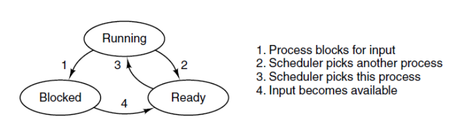
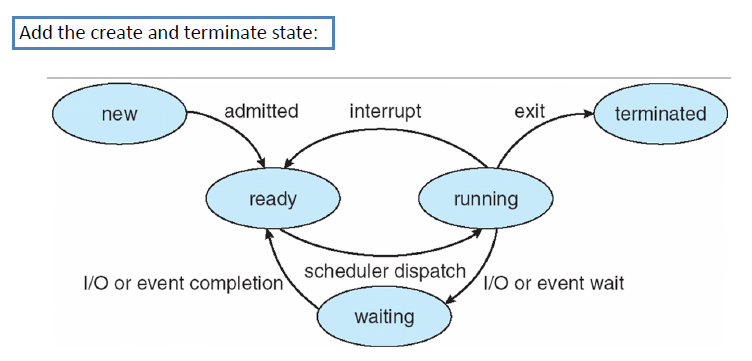
Orphan: Parents ends before Child process. INIT becomes the parent. INIT will periodically clean up orphans.
Zombie: 一个进程使用fork创建子进程，如果子进程退出，而父进程并没有调用wait或waitpid获取子进程的状态信息，那么子进程的进程描述符仍然保存在系统中。这种进程称之为僵尸进程。
进程控制块(Process Control Block, PCB)
系统利用PCB来描述进程的基本情况和运行状态，进而控制和管理进程。
- Process state: running, waiting, etc
- Program counter: location of instruction to next execute
- CPU registers: contents of all process-centric registers
- Memory-management information: memory allocated to the process
- Accounting information: CPU used, clock time elapsed since start, time limits
- I/O status information: I/O devices allocated to process, list of open files
- …
多道程序设计(Multiprogramming)
CPU利用率(CPU utilization)
能够提高CPU的利用率。假设一个进程等待I/O操作的时间与其停留在内存中时间的比为$p$, 则
$$
\text{CPU utilization} = 1 - p^n
$$
$n$为多道程序设计的道数。（粗略的模型）
上下文切换(Context Switch)
When CPU switches to another process, the system must save the state of the old process and load the saved state for the new process via a context switch.
Context of a process represented in the PCB.
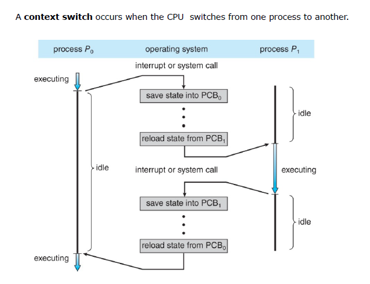
线程控制块(Thread Control Block, TCB)
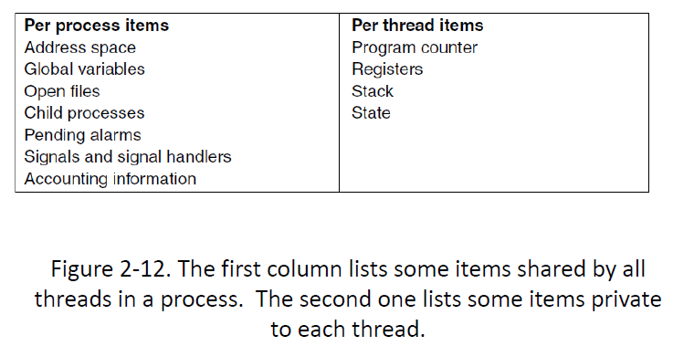
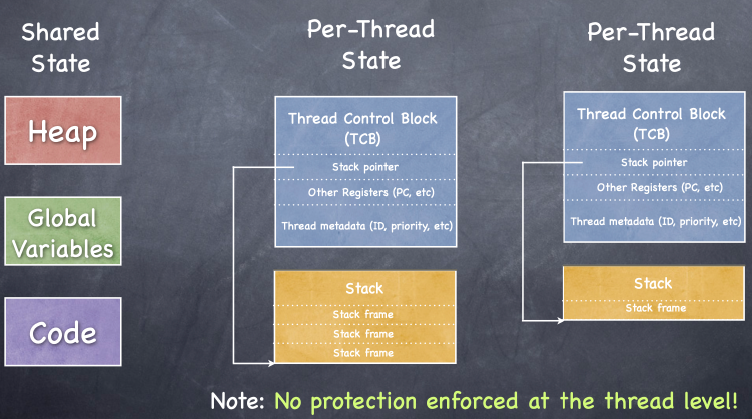
调度
When: 创建进程/进程退出/进程阻塞/I/O发生/HW clock interrupt
What: Save process state to PCB; Pick a process to run next; Dispatch process
调度的指标
Fairness/…
In Batch Systems:
- 吞吐(Throughput): 每小时最大作业数
- 周转时间(Turnaround time): 从提交到终止间的最小时间
- CPU利用率(CPU utilization): 保持CPU始终忙碌
In Interactive Systems:
- 响应时间(Response time): 快速响应请求(less waiting time)
In Real Time Systems:
- 締め切りに間に合う(Meeting deadlines): 避免丢失数据
批处理系统的调度(Scheduling in Batch Systems)
注意等待时间(waiting)和周转时间(turnaround)不一样
先来先服务(First-come Fist-Served, or First In First Out)
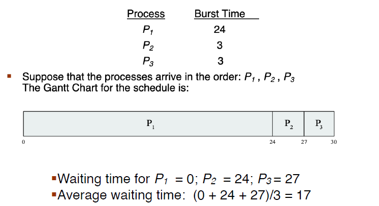
Advantages:
- Works well if the workload (execution time of tasks) is even.
- Minimal overhead—switching between tasks only when each one completes. Will have the best throughput: it will complete the most tasks the most quickly.
- 易实现。
- Obviously fair.
Disadvantages: If heavy task comes first, then the average waiting time is very large.
最短作业优先(Shortest Remaining Time Next)
一种适用于运行时间可以预知的另一个非抢占式的批处理调度算法。
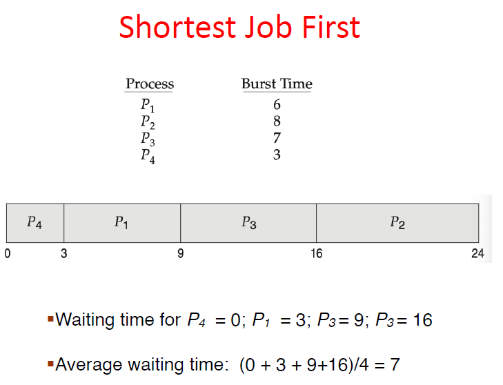
Claim: SJF is optimal for average turnaround time.
最短作业优先算法在什么情况下是最优的？怎么证明？
在所有作业都可同时运行的情况下。假设有$n$个作业，按执行时间从小到大排为$a_1, a_2,…, a_n$. 设$b_1, b_2,…, b_n$是它的一个排列，the turnaround time
$$
\frac{1}{n} \sum_{i = 1}^n n a_i = \frac{1}{n} \sum_{i = 1}^n \sum_{j = 1}^i a_j \le \frac{1}{n} \sum_{i = 1}^n \sum_{j = 1}^i b_j = \frac{1}{n} \sum_{i = 1}^n n b_i
$$
则最短作业优先算法在所有作业都可同时运行的情况下是最优的。
Downsides of SJF:
- The estimation of future is not reliable.
- Frequent context switches —> increase the overhead.
- Starvation, and variance in turnaround time. Some task might end soon, and some might take forever!
最短剩余时间优先(Shortest Remaining Time Next, SRTN/SRTF)
Preemptive version of SJF, and always do the task that has the shortest remaining amount of work to do.
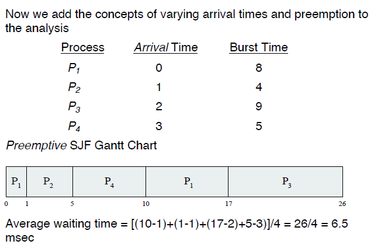
交互式系统中的调度(Scheduling in Interactive Systems)
轮转调度(Round-Robin, RR)
Each task gets resource for a fixed period of time (time quantum, 时间片)
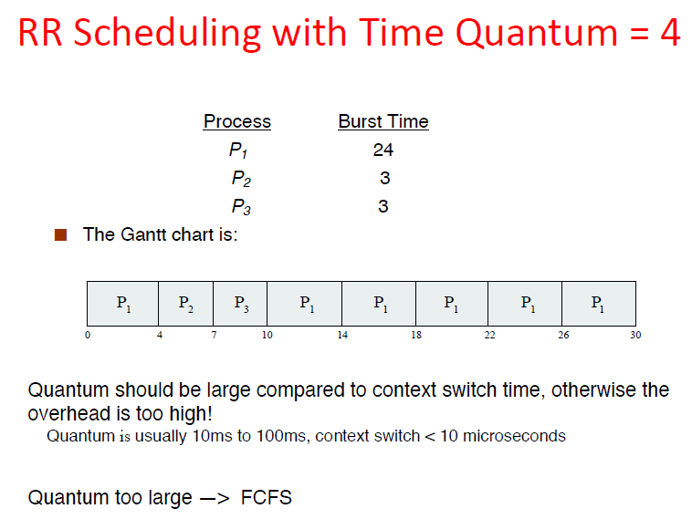
RR ensures we don’t starve, and gives everyone a turn. RR minimizes the variance of turnaround time, can get a very smooth feedback, and in this case, the turnaround is not high.
时间片设太短会导致过多的进程切换，降低了CPU效率；设太长有可能引起对短的交互请求的响应时间变长。一般折中为20ms-50ms.
优先级调度(Priority Scheduling)
Smallest integer -> highest priority
同优先级之间也可以RR.

Starvation – low priority processes may never execute
- Solution—>Aging – as time progresses increase the priority of the process
- Aging can be implemented using multilevel feedback queue
Another problem with multilevel queues is that the process needs to be assigned to the most suitable priority queue a priori, which is obviously not practical —> multilevel feedback queue can also solve this problem.
多级反馈队列(Multilevel Feedback Queue, MFQ)
A process can move between the various queues.
MFQ scheduler defined by the following parameters:
- Number of queues
- Scheduling algorithms for each queue
- Method used to determine when to upgrade a process
- Method used to determine when to demote a process
- Method used to determine which queue a process will enter when that process needs service
规则:
如果 A 的优先级 > B 的优先级，运行 A（不运行 B）。
如果 A 的优先级 = B 的优先级，轮转运行 A 和 B。
工作进入系统时，放在最高优先级（最上层队列）。
一旦工作用完了其在某一层中的时间配额（无论中间主动放弃了多少次 CPU），就降低其优先级（移入低一级队列）。
经过一段时间$S$，就将系统中所有工作重新加入最高优先级队列。
MFQ scheduler can achieve a balance between turnaround time, low overhead, and fairness.
Game the system
关于规则4，最初的版本是如果用完一整个时间片降低，主动释放就优先级不变。
进程在时间片用完之前，调用一个 I/O 操作（比如访问一个无关的文件），从而主动释放 CPU。如此便可以保持在高优先级，占用更多的 CPU 时间。做得好时（比如，每运行 99%的时间片时间就主动放弃一次 CPU），工作可以几乎独占CPU。
实时系统的调度(Scheduling in Real-Time Systems)
硬实时/软实时: 能否容忍错过ddl. 周期性/非周期性
准入控制(Admission-control)
如果有$m$个周期事件，事件$i$以周期$P_i$发生，并需要$C_i$秒CPU事件处理一个事件，那么可以处理负载的条件是
$$
\sum_{i=1}^m \frac{C_i}{P_i} \le 1
$$
满足这个条件的实时系统称为是可调度的。
单调速率调度(Rate Monotonic Scheduling)
周期越短优先级越高。E.g., two processes P1 and P2, with periods: p1 is 50, p2 is 100, then P1 is scheduled first, and then P2, and P2 can be preemptive by P1. 假设t1 = 20, t2 = 35.
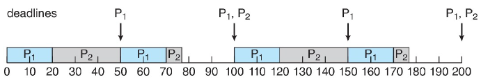
Claim: Rate-monotonic scheduling is considered optimal in that if a set of processes cannot be scheduled by this algorithm, it cannot be scheduled by any other algorithm that assigns static priorities.
Rate-monotonic scheduling has a limitation: CPU utilization is bounded, and it is not always possible to maximize CPU resources fully. The worst-case CPU utilization for scheduling N processes is:
$$
N(2^{1/N} - 1) \
\lim_{N \rightarrow \infty} N(2^{1/N} - 1) = \ln 2
$$
P.S. 虽然$U = \sum_{i = 1}^m \frac{C_i}{P_i}\le N(2^{1/N}-1)$能推导出n个独立的周期任务可以被RM调度，但不满足不等式不代表不能被RM调度。
最早截止期限优先(Earliest Deadline First Scheduling)
DDL越近优先级越高。同样以上面的例子
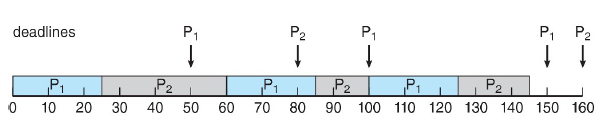
内存管理
内存管理需要实现的功能
它的任务是有效地管理内存，即记录哪些内存是正在使用的；在进程需要时为其分配内存；protect memory required to ensure correct operation；进程使用完后释放内存。（记录、分配、保护、释放）
最大化内存利用率和系统吞吐量。
虚拟（逻辑）地址空间和物理地址空间(Address Space)
地址空间是一个进程可用于寻址内存的一套地址集合。每个进程都有一个自己的地址空间，并且这个地址空间独立于其他进程的地址空间（除了在一些特殊情况下进程需要共享它们的地址空间外） 。
- Logical (Virtual) Address: generated by CPU
- Physical Address: seen by the memory unit
The concept of a logical address space that is bound to a separate physical address space is central to proper memory management.
Base and Limit Registers给每个进程提供私有的地址空间。
连续内存分配(Contiguous Memory Allocation)
The dynamic memory allocation problem: How to satisfy a request of size N from a list of free holes? 动态空间分配算法。
First-Fit
Allocate the first hole that is big enough.
Searches as little as possible.
Next-Fit
Keeps track of the previous suitable hole, and starts first-fit search at the place where it left off last time.
Slightly worse performance than first-fit.
Best-Fit
Allocate the smallest hole that is big enough.
Search the entire list and result in tiny and useless holes (might waste more memory than first-fit or next-fit).
Worst-Fit
Allocate the largest hole.
Also search the entire list. Not a very good idea either.
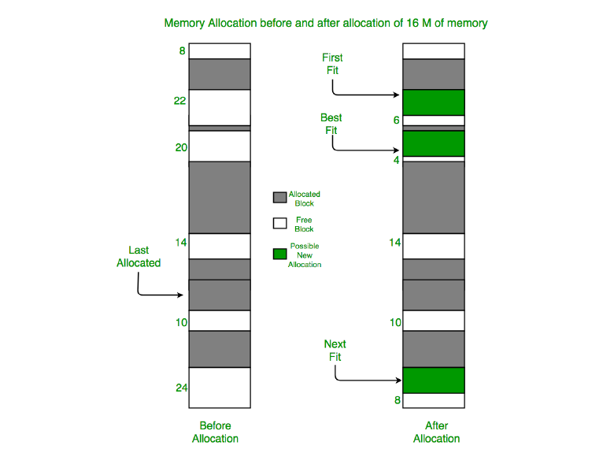
Quick-Fit
Maintains separate lists for some of the more common sizes requested.
Finding a hole of the required size is extremely fast. But the holes should be sorted by size (when a process terminates).
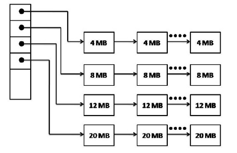
缺点：在一个进程终止或被换出时， 寻找它的相邻块并查看是否可以合并的过程是非常费时的。如果不进行合并，内存将会很快分裂出大批的进程无法利用的小空闲区。
内部碎片和外部碎片(Fragmentation)
External Fragmentation: Total memory space exists to satisfy a request, but it is not contiguous (holes).
Internal Fragmentation: Allocated memory may be slightly larger than requested memory; this size difference is memory internal to a partition, but not being used.
50-percent rule: analysis of first-fit algorithm reveals that given N blocks allocated, 0.5N blocks lost to external fragmentation (1/3 may be unusable)
Reduce external fragmentation by compaction。
- Shuffle memory contents to place all free memory together in one large block to coalesce holes (very costly).
- Compaction is possible only if relocation is dynamic, and is done at execution time.
分段(Segmentation)
段表(Segment Table)的结构、分段中的地址转换
Segment Table – It maps two-dimensional Logical address into one-dimensional Physical address. It’s each table entry has:
- Segment Base: the starting physical address where the segments reside in memory.
- Segment Limit: It specifies the length of the segment.
Segment-table base register (STBR) points to the segment table’s location in memory.
Segment-table length register (STLR) indicates number of segments used by a program.

分页(Paging)
页表(Page Table)的结构、分页中的地址转换、页面共享
分页中的地址转换
虚拟地址空间按照固定大小划分成被称为页面(page) 的若干单元。在物理内存中对应的单元称为页框(page frame) 。页面和页框的大小通常是一样的。每个进程都有自己的页表，用于将逻辑地址转化为物理地址。
Logical address generated by CPU is divided into: <page-number, offset>
Page number (p): an index into a page table, which contains base address of each page in physical memory (which page).
Page offset (d): combined with base address to define the physical memory address (which byte within that page).
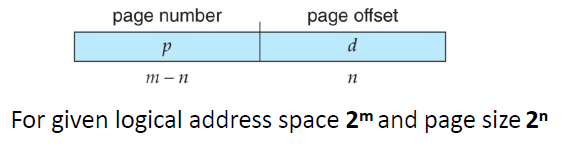
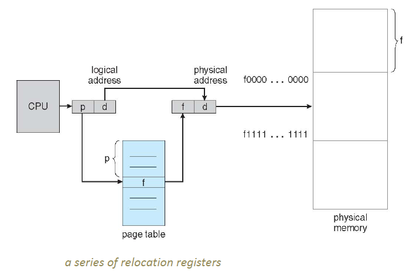
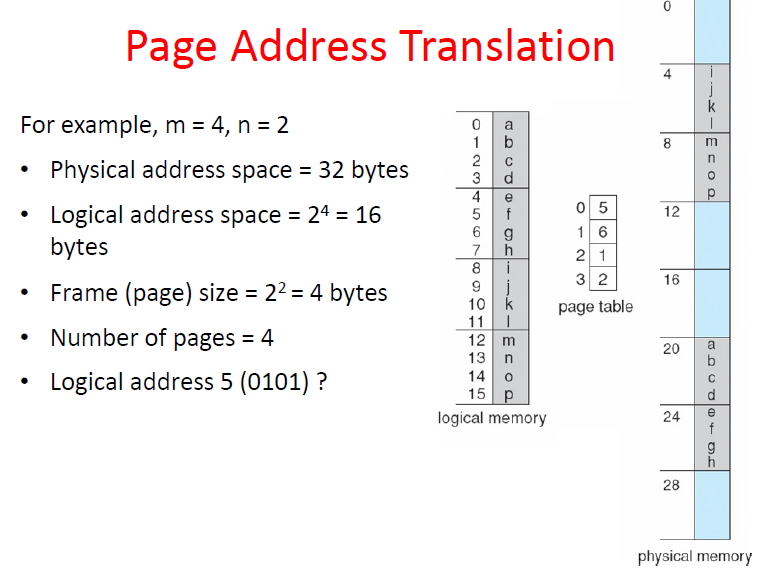
Not all pages may be mapped to frames. 需要一个Valid-invalid bit (Present/Absent). 1表示表项有效，可以使用；0表示该表项对应的虚拟页面现在不在内存中，访问该页面会引起一个缺页中断。
页面共享
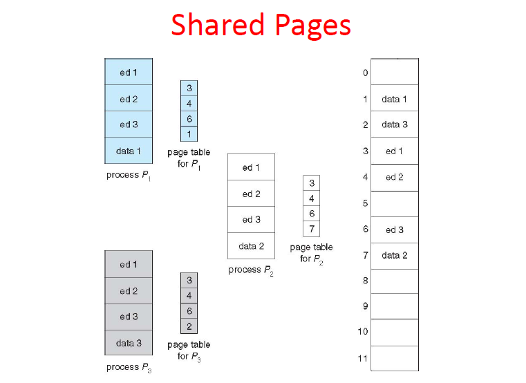
页表(Page Table)的结构
页表数学本质上是一个函数 F(virtual page number) = physical frame number
不同计算机的页表项大小可能不一样，通常是32位。一个典型的页表项包括
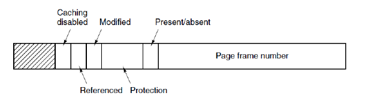
- 页框号(Page frame number)
- 在/不在位(Present/absent bit): if the page is physically stored in memory
- 保护位(Protection): what kinds of access are permitted (read-only, read/write)
- 修改位(Modified) & 访问位(Referenced):
- When a page is referenced, the hardware automatically sets the referenced bit
- When a page is written to, sets the modified bit (dirty bit)
- 禁止高速缓存(Caching disabled): for pages that map onto device registers rather than memory.
转换检测缓冲区/块表(Translation Look-aside Buffers, TLB)
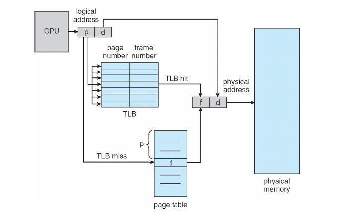
On a TLB miss, value is loaded into the TLB for faster access next time (what replacement policy?)
Soft miss: occurs when the page referenced is not in the TLB, but is in memory. All that is needed is for the TLB to be updated. No disk I/O.
Hard miss: occurs when the page itself is not in memory (and not in the TLB). A disk access is required to bring in the page, which can take several milliseconds.
有效访问时间(Effective Access Time, EAT)
Hit Ratio ($\alpha$): percentage of times that a page number is found in the TLB, Memory access time ($t$), TLB search time ($\varepsilon$) .
$$
\text{EAT} = (\varepsilon + t) \alpha + (\varepsilon + 2t) (1 - \alpha)
$$
页表的实现方式
多级页表(Multi-Level Page Table)
E.g.
| PT1(10 bits) | PT2(10 bits) | Offset(12 bits) |
|---|
倒排页表(Invented Page Table)
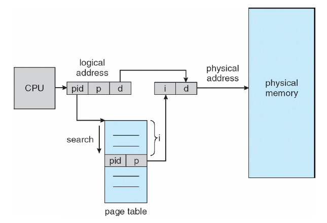
节省了大量的空间，但地址转换会很低效(不能把p当作索引，而是要搜索整个页表)。解决方法包括TLB或哈希。
★ 虚拟内存(Virtual Memory)
请求调页(Demand Paging)
Bring a page into memory only when it is needed (only keep frequently used pages in memory). In each page table entry, use a Present/Absent (Valid/Invalid) bit to track of which pages are physically present in memory.
Lazy Pager: never swap a page into memory unless page will be needed.
Pure Demand Paging: start process with no pages in memory.
局部性原理保证了一旦进程开始在一组页上运行，在接下来相当长的一段时间内它会一直停留在这些页上而不去访问其它的页：这样我们就可以认为“缺页”错误是一种稀有事件。
Performance of Demand Paging
Page Fault Rate ($0 \le p \le 1$) is the rate on which processes find the page fault in the memory.
Effective Access Time (EAT) = $(1-p) \times$memory access time + $p \times$page fault overhead.
缺页错误的处理流程 Page fault handling (????? えっ？
流程精简版：
- 将要访问的页从磁盘复制到内存，内存不够时，将内存中不经常用的页移到磁盘。
- 缺页异常返回。
- 重新执行刚才要处理的页。
The hardware traps to kernel, saving program counter on stack
Assembly code routine started to save general registers and other volatile info
System discovers page fault has occurred, tries to discover which virtual page needed
Once virtual address caused fault is known, system checks to see if address valid and the protection consistent with access
Find a free (clean) frame
If no free frame, run page replacement to select a victim
If frame selected dirty, page is scheduled for transfer to disk, context switch takes place, suspending faulting process
As soon as frame clean, system looks up disk address where needed page is, and schedules disk operation to bring it in (faulting process is still suspended)
When disk interrupt indicates page has arrived, page table is updated, and frame is marked as being in normal state
Faulting instruction backed up to state it had, and program counter is reset
Faulting process is scheduled, operating system returns to routine that called it
Routine reloads registers and other state information, returns to user space to continue execution
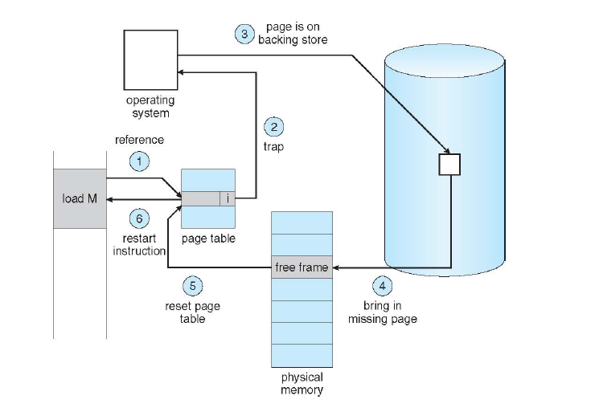
When a page must be brought in
- Find a free frame
- evict one if there is no free frame
- Issue disk request to fetch data for page
- Move “current process” to disk queue
- Context switch to new process
- Update page table entry when disk completes
- Move “current process” to ready queue
When a page must be swapped out
- Find all page table entries that refer to old page
- Frame might be shared
- Set each page table entry to not present (invalid)
- Remove any TLB entries
- TLB Shootdown: in multiprocessors, TLB entry must be eliminated from the TLB of all processors
- Write page back to disk, if needed
- Dirty bit in page table entry indicates need
页面置换算法(Page Replacement)
FIFO
Replace the oldest page (use an FIFO queue to track ages of pages)

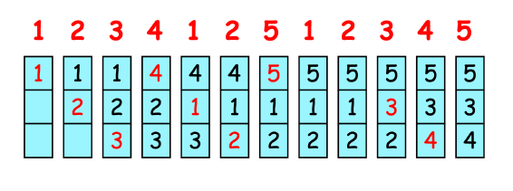
Bélády’s anomaly: fewer frames, fewer page faults (可能)
- 4 frames $\rightarrow$ 10 page faults
- 3 frames $\rightarrow$ 9 page faults
Optimal
Replace page that will not be used for longest period of time. (理论上的最优解，但实际上无法预知未来，因而不可能实现，通常作为衡量算法能力的参照)
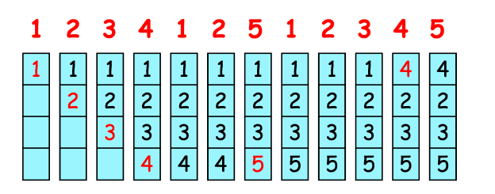
Least Recently Used (LRU)
Replace page that has not been used in the most amount of time.
需要硬件支持，代价高。需要额外维护一个counter或stack
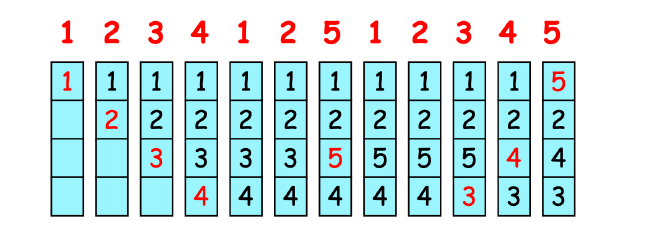
Not Recently Used (NRU)
使用(Reference bit, Modify bit)表示(最近是否使用，最近是否修改). 替换优先度Class 0 (0, 0) > Class 1 (0, 1) > Class 2 (1, 0) > Class 3 (1, 1). 算法随机从编号最小的非空类中挑选一个页面淘汰。
Not Frequently Used (NFU)
用软件模拟LRU. 每个Page和和一个软件计数器关联。计数器的初值为0 。每次时钟中断时，由操作系统扫描内存中所有的页面，将每个页面的R位（它的值是0或1) 加到它的计数器上。这个计数器大体上跟踪了各个页面被访问的频繁程度。发生缺页中断时，则置换计数器值最小的页面。
NFU不会忘记任何事情，因此需要Aging Algorithm.
假设在第一个时钟滴答后，页面0-5的R位值分别是101011 (页面0为1. 页面1为0, 页面2为1, 以此类推）。换句话说，在时钟滴答0到时钟滴答1期间，访问了页0 、2 、4 、5。它们的R位设置为1, 而其他页面的R位仍然是0 。对应的6个计数器在经过移位井把R位插入其左端后的值如图3-17a所示。图中后面的4列是在下4个时钟滴答后的6个计数器的值。
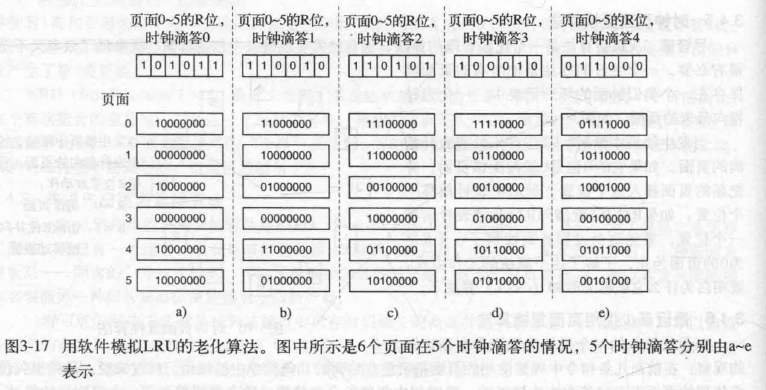
发生缺页中断时，将置换计数器值最小的页面。如果一个页面在前面4个时钟滴答中都没有访问过，那么它的计数器最前面应该有4个连续的0, 因此它的值肯定要比在前面三个时钟滴答中都没有被访问过的页面的计数器值小。
工作集(Working Set)
抖动(Thrashing)
(FIFO) Pages不够多，每执行几条指令就发生一次Page fault。
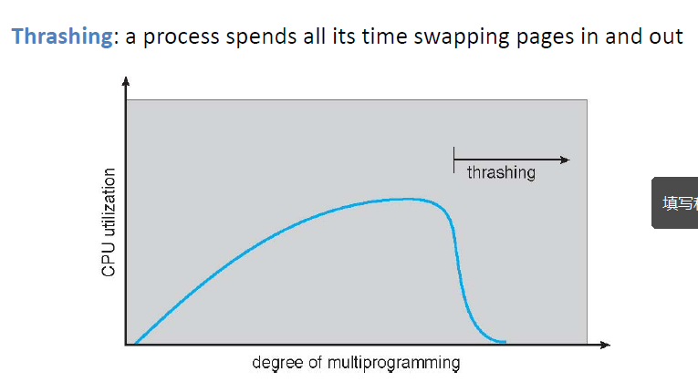
访问局部性(Locality of Reference)
- Temporal locality: The same memory location is going to be accessed again in the near future.
- Spatial locality: Nearby memory locations are going to be accessed in the future.
工作集页面置换算法
The set of pages that a process is used in the k most recent memory references.
可用内存太小装不下整个工作集，将会产生大量page fault. 因此需要Keep track of each process’ working set and make sure that it is in memory before letting the process run来减少page fault rate.
基本工作集算法
当一个page fault发生，找到一个不在工作集里的页面将其淘汰。
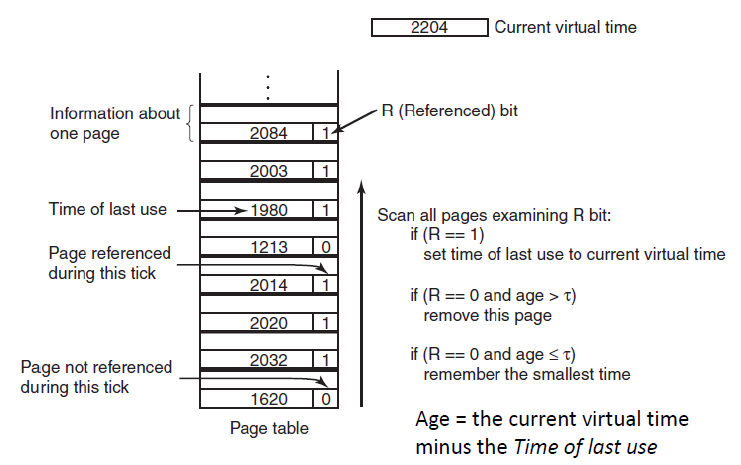
如果没有页面不在工作集中，就淘汰R=0里age最大（last use最小）的页面。
因为page fault发生后需要扫描整个页表，所以比较费时。
工作集时钟(WSClock)
Use a circular list of page frames. 提高效率
1 | if R == 1: |
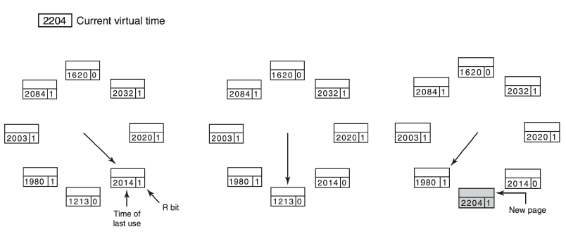
同步
条件竞争(Race Condition)
考虑Producer and consumer problem
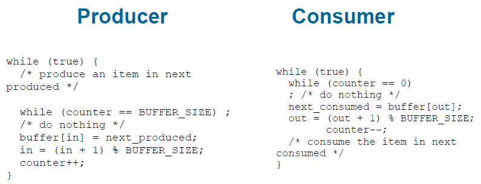
count++和count–非原子操作，可能会出问题。
Thread A: x = x +1. Thread B: x = x + 2. x初始为0，最终x的值可能为多少？
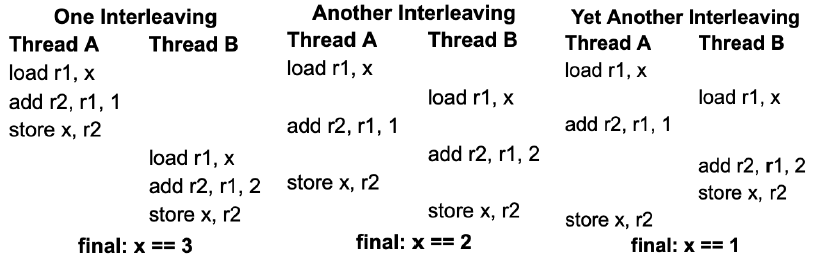
临界区(Critical Section)
满足四个条件
- 安全性(Safety): 任何两个进程不能同时处于其临界区。
- 不应对CPU的速度和数据做任何假设。
- 临界区外运行的进程不得阻塞其他进程。
- 活性(Liveness): 不得使进程无限期等待进入临界区。
忙等待的互斥(Mutual Exclusion with Busy Waiting)
屏蔽中断(Disabling Interrupts)
进程在刚刚进入临界区后立即屏蔽所有中断，并在就要离开之前再打开中断。这样，在屏蔽中断之后CPU将不会被切换到其他进程。
这个方法简单但不好。把屏蔽中断的权力交给用户进程是不明智的。要是Never enable interrupts就完了。而且如果系统是多处理器，则屏蔽中断仅仅对执行disable指令的那个CPU有效。其他CPU仍将继续运行，并可以访问共享内存。
锁变量(Lock Variables)
This method is to assign a lock variable. This is set to (say) 1 when a process is in its critical section and reset to zero when a processes exits its critical section.
不好。This simply moves the problem from the shared variable to the lock variable. 会发生Race Condition.
严格轮转法(Strict Alternation)
1 | /* Process 0 */ |
有缺陷。进程0和进程1必须严格轮转，如果进程1快得多，进程1就会花很多时间等待进程0. 这违反了第三条原则（临界区外运行的进程不得阻塞其他进程）。
Peterson’s Solution
1 | int No_Of_Processes; // Number of processes |
TSL(test and set lock)指令
在硬件上能让test and set lock拥有原子性。
1 | enter_region: |
TSL也可用XCHG来替代。
忙等待的问题
忙等待会导致浪费CPU时间和优先级反转问题。
考虑一台计算机有两个进程，H优先级较高，L优先级较低。调度规则规定，只要H处于就绪态它就可以运行。在某一时刻，L处于临界区中，此时H变到就绪态，准备运行（例如，一条I/O操作结束）。现在H开始忙等待，但由于当H就绪时L不会被调度，也就无法离开临界区，所以H将永远忙等待下去。这种情况有时被称作优先级反转问题 (priority inversion problem).
可以通过优先级继承协议(The priority inheritance protocol)解决，允许任务继承处于blocking状态的最高优先级任务的优先级。
条件变量(Condition Variables)
We need a new primitive (that can atomically unlock and sleep).
A Condition Variable is a synchronization object that lets a thread efficiently wait for a change to shared state that is protected by a lock.
A condition variable has three methods:
- Wait(ConditionVariable *cv, Lock *lock): atomically release lock (unlock) and suspends execution of the calling thread (sleep)
- Signal(ConditionVariable *cv): wake up a waiter (which is waiting for this condition variable). If no threads are on the waiting list, signal has no effect. (No memory, careful not to lose sigmals)
- Broadcast(ConditionVariable *cv): wake up all waiters, if any.
用条件变量解决生产者消费者问题
1 | int BUFFER_SIZE = 100; |
P.S. 如果有多个生产者和消费者，把睡大觉的if改成while（因为可能醒来后有同类抢先，这时还是要睡大觉），signal改成broadcast.
★ 信号量(Semaphores)
A semaphore is a synchronization variable that contains an integer value. 取值可以是0（表示没有保存下来的唤醒操作）或者为正值（表示有一个或多个唤醒操作）。
- Cannot access the integer value directly (only via semaphore operations)
- Initialized to some integer value
- Supports two atomic operations other than initialization
- P(), (or down() or wait()) 检验: 检查值是否大于0. 大于则减1，表示用掉一个保存的唤醒信号；否则睡眠。
- V(), (or up() or signal()) 自增：将值加1.
If semaphore is positive value, think of value as keeping track of how many ‘resources’ or ‘un-activated unblocks’ are available.
If semaphore is negative, tracks how many threads are waiting for a resource or unblock.
用信号量解决生产者消费者问题
1 | semaphore empty = N; // 空槽数目 |
用condition variable和mutex实现semaphores
1 | typedef struct { |
★ 管程(Monitors)
Definition: a lock and zero or more condition variables for managing concurrent access to shared data. 一个管程是一个由过程、变量及数据结构等组成的一个集合，它们组成一个特殊的模块或软件包。
Producer-Consumer with Monitors
1 | monitor ProdCons |
What will happen after signal calls?
Brinch Hansen semantics
Under Brinch Hansen semantic, signal calls take waiting threads from a condition variable’s waiting list and put them on the ready list.
The thread which calls signal directly exits the monitor. signal must be the last statement of a monitor procedure.
signal后立即退出管程
Hoare semantics
Under Hoare semantics, when a thread calls signal, execution of the signaling thread is suspended, the ownership of the lock is immediately transferred to one of the waiting threads (signaled thread), and execution of that thread is immediately resumed.
The thread which calls signal (signaler) does not continue in the monitor until the signaled thread exits or waits again.
Hoare semantics allow the signaled thread to assume that the state has not changed since the signal that woke it up.
signal后自己挂起，被signal的线程执行完后回来继续执行
Mesa semantics
Under Mesa semantic, signal calls take waiting threads from a condition variable’s waiting list and put them on the ready list (The same as Brinch Hansen).
Later, when these threads are scheduled, they may block for some time while they try to re-acquire the lock. There is no suspended state: the thread calls signal continues until it exits the monitor or waits.
signal后自己接着执行，完毕退出后被signal的线程再执行
生产者-消费者问题(The Producer-Consumer Problem)
条件变量、信号量、管程的实现见前文。
读者写者问题(The Readers and Writers Problem)
Multiple processes wanting to read an item, and one or more needing to write. Rules:
- Any number of readers can read simultaneously
- Only one writer at a time
- No readers if a writer is writing
需要实现RWLock (readers/writers lock)，why not mutex lock? 因为多个reader可以同时read.
1 | class RWLock{ |
readShouldWait()和writeShouldWait()的实现方式可以偏向读者，也可以偏向写者。
Writers preferred solution
1 | bool RWLock::readShouldWait() { |
Readers preferred solution
1 | bool RWLock::readShouldWait() { |
Readers preferred solution (even more)
1 | /* ..should.. 同Readers preferred solution. 修改doneWrite: write结束优先唤醒读者 */ |
A related fair solution
1 | class RWLock{ |
Idea: Threads should be served in queue.
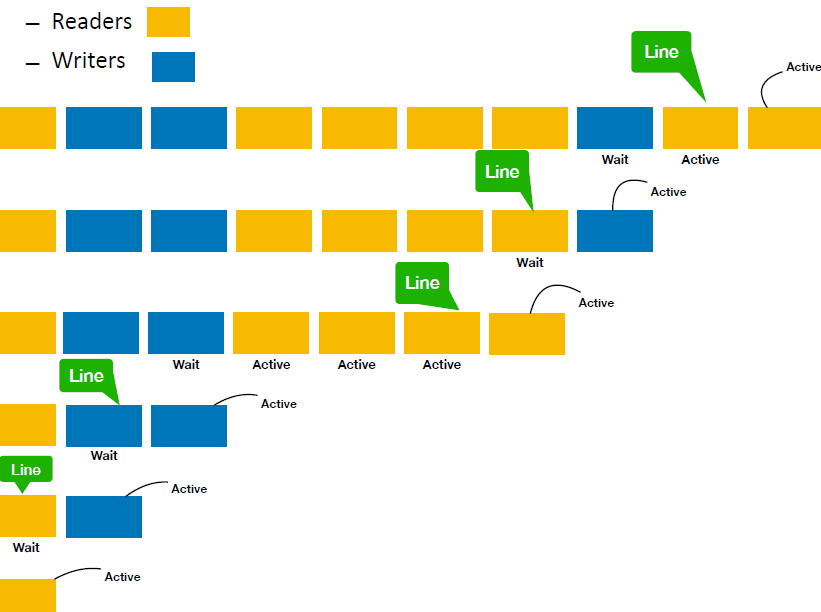
Read-Copy-Update (RCU)
想要避免使用锁。Readers should not be blocked by the writers. 每个read操作要么读取旧的数据版本，要么读取新的数据版本，但绝不能是新旧数据的一些奇怪组合。
订阅-发布机制(Publish-Subscribe Mechanism)
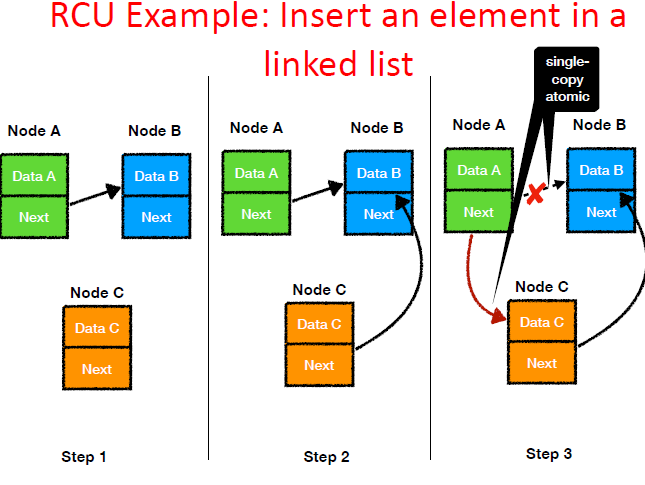
Publish: rcu_assign_pointer(&NodeA->Next, NodeC);
Subscribe: read = rcu_dereference(&Node->Next);
宽限期(RCU Grace period)
When to delete old data? 不能确定对待删除数据有没有更多的read. 因此需要等待，等待的时间即为宽限期。Only when the grace period expires, we can safely deleted the old data.
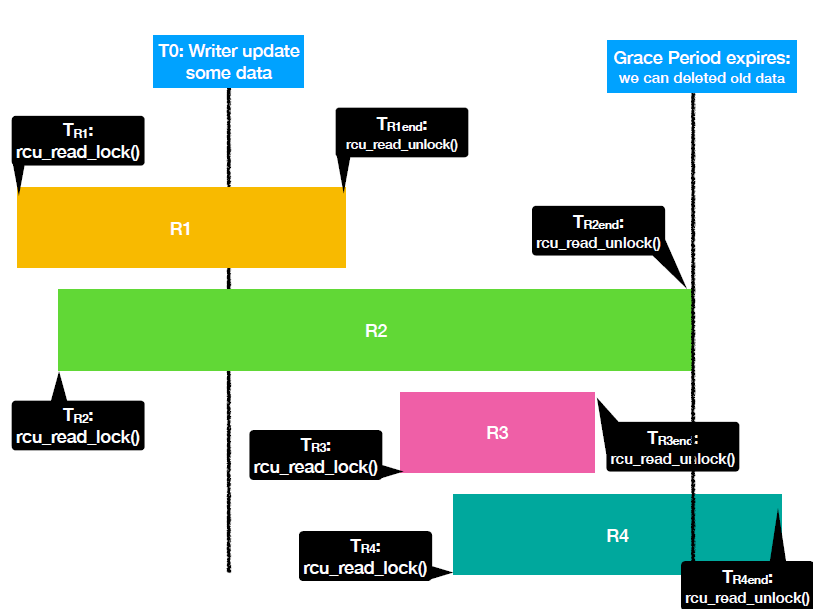
Limitations: 当data很复杂（比如双向链表，需要同时更新两个指针）时RCU会很困难；宽限期可能会非常长。
哲学家就餐问题(The Dining Philosophers Problem)
5个哲学家吃意面，桌上共5把叉子，每人需要两把叉子才能进餐。每个人先思考一段时间再进餐。如果每个人一旦都拿到一把叉子，都在等待，会导致死锁。或者方案2，先拿左叉子，若有右叉子就直接拿，没有就放下叉子歇一会，重复流程。但方案2也有小概率导致饿死。方案3：一次只能有一个人吃，没有死锁，不会饿死，但不够好。
方案4：哲学家展示自己的状态，Eating, Thinking or Hungry (want to eat). 饥饿的时候尝试获得两把叉子。叉子只能从Not eating的邻居处获得。
1 |
|
死锁
A set of processes is deadlocked if (a) Each process in the set waiting for an event; (b) That event can be caused only by another process.
死锁的四个必要条件
- 互斥条件。Only one (or finite) process at a time can use a resource.
- 占有和等待条件。A process holding at least one resource is waiting to acquire additional resources held by other processes.
- 不可抢占条件。A resource can be released only voluntarily by the process holding it, after that process has completed its task.
- 环路等待条件。$P_i$等待$P_{i+1}$的某个条件，这样的关系形成一个环。
资源分配图(Resource-Allocation Graph)
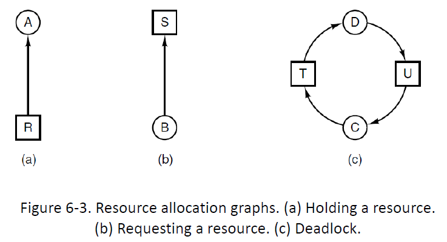
死锁检测(Deadlock Detection)
无环则无死锁（DFS）。有环且only one resource per type则死锁，several resources per type可能死锁，需要利用基于资源分配矩阵、请求矩阵、可用向量的算法进行检测
处理死锁的策略：(a) 忽略问题；(b) 检测死锁并恢复；(c) 仔细分配资源，动态地避免死锁；(d)通过破坏四个必要条件之一防止死锁产生。
检测死锁的算法（还没看）
从死锁中恢复：利用抢占、利用回滚、通过杀死进程。
死锁避免(Deadlock Avoidance)
安全状态、非安全状态
Existing resource vector (E): A vector of length $m$ indicates the total number of existing resources of each type.
Available resource vector (A): A vector of length $m$ indicates the number of available resources of each type.
Current allocation matrix (C): An $n \times m$ matrix defines the number of resources of each type currently allocated to each process. If C[i][j] = $k$, then process $P_i$ holds $k$ instances of resource type $E_j$.
Max Request matrix (M): An $n \times m$ matrix defines the maximum demand of each process. If M[i][j] = $k$, then process $P_i$ may request at most $k$ instances of resource type $E_j$.
Request vector (R): An $n \times m$ matrix indicates the current request of each process. If R[i][j] = $k$, then process $P_i$ is requesting $k$ more instances of resource type $E_j$.
At any instant of time, there is a current state consisting of E, A, C, M, R. A state is said to be safe if there is some scheduling order in which every process can run to completion even if all of them suddenly request their maximum number of resources immediately.
Unsafe does not necessarily result in deadlock!（可能有进程先释放资源）
银行家算法(Banker’s algorithm)
新增Need remaining matrix (N): An $n \times m$ matrix indicates the remaining resource need of each process. If N[i][j] equals $k$, then process $P_i$ may need $k$ more instances of resource type $E_j$ to complete its task. Note that N[i][j] = M[i][j] − C[i][j].
Idea: check to see if granting the request leads to an unsafe state. If so, the request is denied. If granting the request leads to a safe state, it is carried out.
算法流程：
- 寻找$N$的一行，其各位均小于等于Available resource vector $A$. 不存在则最终会死锁（假设进程会一直占有资源直到终止）
- 找到之后，使其获得所需的资源并运行结束，将该进程标记为终止，释放全部资源回到$A$.
- 重复以上两步，或者直到所有的进程都标记为终止，其初始状态是安全的，或者所有进程的资源需求都得不到满足， 此时就是发生了死锁。
1 | while (P != ∅) { |
实际上It is essentially useless，很少用因为: (1) 进程几乎不能提前知道$M$; (2) 进程总数是动态变化的; (3) $A$中的资源可能会突然消失(tape drives can break).
死锁预防(Deadlock Prevention)
破坏死锁四个必要条件之一 (Assure that at least one of conditions is never satisfied).
破坏互斥条件
- Make data read only
- Read-Copy-Update (RCU)
- Proxy thread - the only thread to access shared data, other threads should communicate with proxy thread to read or write shared data —> will increase the burden of system.
- Spooling technique - for resource like printer, the processes actually uses virtualize printers, the only process that actually requests the physical printer is the printer daemon(守护).
破坏占有并等待
禁止已持有资源的进程再等待其他资源。一种实现方法是规定所有进程在开始执行前请求所需的全部资源。另一种方案是要求当一个进程请求资源时，先暂时释放其当前占用的所有资源，然后再尝试一次获得所需的全部资源。
破坏不可抢占
Strategy:
- If a thread is holding some resources and requests another resource that cannot be immediately allocated to it (that is, the thread must wait), then all resources the thread is currently holding are preempted (implicitly released).
- The preempted resources are added to the list of resources for which the thread is waiting.
- Process will be restarted only when it can regain its old resources, as well as the new ones that it is requesting.
破坏环路等待
一种方式是保证每一个进程在任何时刻只能占用一个资源，如果要请求另外一个资源，它必须先释放第一个资源。
另一种方式是将所有资源统一编号，进程可以在任何时刻提出资源请求，但是所有请求必须按照资源编号的顺序（e.g.升序）提出。
Summary
| Condition | Approach |
|---|---|
| Mutual exclusion | Spool everything |
| Hold and wait | Request all resources initially |
| No preemption | Take resources away |
| Circular wait | Order resources numerically |
文件系统
文件系统的功能
Naming: File name and directory
- Translate name + offset to disk blocks
File Access: Open, read, write and other operations
Disk Management: Fair and efficient use of disk space
- Allocate spaces to files
- Keep track of free space
- Fast access to files, …
Protection: Must mediate file access from different users
Reliability: Must not lose file data
文件(File)
文件的命名和属性、文件的顺序和随机访问模式、与文件相关的操作
文件命名(File Naming)
文件命名使用户不必关心信息储存和磁盘工作的细节。具体的命名规则因操作系统而异。不同的扩展名通常表示文件的一些信息。
文件属性(Metadata)
除了文件名和数据，OS还会保存其他与文件相关的信息。包括但不限于：
- Type: needed for systems that support different types
- Location: pointer to file location on device
- Size: how big the file is (current size, or maximum size)
- Time: when the file was created, most recently accessed, and most recently modified
- Protection: who may access it, and what can be done
- Control flags
文件访问(Access)
- 顺序访问(Sequential Access): Data read or written in order (read next / write next / reset). Most common access pattern. Can be made very fast.
- 随机访问(Random (Direct) Access): Randomly address any block (read n / write n / seek n). File operations include the number of block as parameter. Difficult to make fast.
- Index Access
与文件相关的操作
使用文件的目的是存储信息并方便以后的检索。对于存储和检索，不同系统提供了不同的操作。以下是与文件有关的最常用的一些系统调用：
- create. 创建不包含任何数据的文件，并设置文件的一些属性。
- delete. 当不再需要某个文件时，必须删除该文件以释放磁盘空间。
- open. 把文件属性和磁盘地址表装入内存，便于后续调用的快速访问。
- close. 关闭文件以释放内部表空间。磁盘以块为单位写入，关闭文件时，写入该文件的最后一块，即使这个块还没有满。
- read. 在文件中读取数据。指明需要读取多少数据，并且提供存放这些数据的缓冲区。
- write. 向文件写数据，从文件当前位置开始（会覆盖后面的数据）。
- append. write的限制版本，只能在文件末尾添加数据的write。
- seek. 对于随机访问文件，要指定从何处开始获取数据，通常的方法是用seek系统调用把当前
位置指针指向文件中特定位置。seek调用结束后，就可以从该位置开始读写数据了。 - get/set attributes.
- rename. 改变文件名。
inode (Index Node)
Several pieces of information should be associated with each open file. The inode data structure can be used to store static information about a file.
打开文件表(Open-File Table)
OS在memory中维护一个open-file table, 保存所有open files的信息。
- Per-process open file table: tracking all files opened by process
- System-wide open file table: process-independent information
- Multiple entries of per-process open-file table can point to the same entry of system open-file table
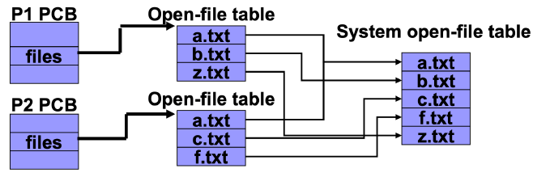
**Open()**的流程：
- search System-Wide Open-File Table to see if file is currently in use
- if it is, create a Per-Process Open-File table entry pointing to the existing System-Wide Open-File Table
- if it is not, search the directory for the file name; once found, place the FCB in the System-Wide Open-File Table
- make an entry, i.e., Unix file descriptor, Windows file handle in the Per-Process Open-File Table, with pointers to the entry in the System-Wide Open-File Table and other fields which include a pointer to the current location in the file and the access mode in which the file is open
- increment the open count in the System-Wide Open-File Table
- returns a pointer to the appropriate entry in the Per-Process Open-File Table
- all subsequent operations are performed with this pointer
目录(Directory)
Single-Level Directory: 所有文件都在同一个目录(root directory)下。
Two-Level Directory: 按用户分目录，每个用户的所有文件都放在自己的目录下。
目录的层级结构(Hierarchical Directory)
Files organized into trees
Directory stores mappings between human-friendly file name and file index (inode) <file_name, file_index>.
硬链接(Hard Links)和符号链接(Symbolic Links)
Links can be hard or soft
- Hard link: points to the file by inode number
- Soft (symbolic) link: points to the file by name
对于Hard link，每个inode都有一个link counter. File blocks are deallocated only when counter = 0. Hard link不能链接其他文件系统的文件，通常也不允许link到一个目录（”..”可能会出问题）
对于Soft link，可以链接其他文件系统的文件，也可以link到一个目录。Find the name of target file, and starts the lookup process using the new name.
硬连接指通过索引节点来进行连接。在 Linux 的文件系统中，保存在磁盘分区中的文件不管是什么类型都给它分配一个编号，称为索引节点号(Inode Index)。在 Linux 中，多个文件名指向同一索引节点是存在的。比如：A 是 B 的硬链接（A 和 B 都是文件名），则 A 的目录项中的 inode 节点号与 B 的目录项中的 inode 节点号相同，即一个 inode 节点对应两个不同的文件名，两个文件名指向同一个文件，A 和 B 对文件系统来说是完全平等的。删除其中任何一个都不会影响另外一个的访问。
硬连接的作用是允许一个文件拥有多个有效路径名，这样用户就可以建立硬连接到重要文件，以防止“误删”的功能。其原因如上所述，因为对应该目录的索引节点有一个以上的连接。只删除一个连接并不影响索引节点本身和其它的连接，只有当最后一个连接被删除后，文件的数据块及目录的连接才会被释放。也就是说，文件真正删除的条件是与之相关的所有硬连接文件均被删除。
另外一种连接称之为符号连接（Symbolic Link），也叫软连接。软链接文件有类似Windows 的快捷方式。它实际上是一个特殊的文件。在符号连接中，文件实际上是一个文本文件，其中包含的有另一文件的位置信息。比如：A 是 B 的软链接（A 和 B 都是文件名），A 的目录项中的 inode 节点号与 B 的目录项中的 inode 节点号不相同，A 和 B 指向的是两个不同的 inode，继而指向两块不同的数据块。但是 A 的数据块中存放的只是 B 的路径名（可以根据这个找到 B 的目录项）。A 和 B 之间是“主从”关系，如果 B 被删除了，A 仍然存在（因为两个是不同的文件），但指向的是一个无效的链接。
文件和目录的角色: Two Key Abstractions
File: Array of bytes that can be read and written
- Associate bytes with a user readable name
- Also has a low-level name (inode number)
- Usually OS does not know the exact type of the file
Directory: A list of files and directories
- Each entry either points to file or other directory
- Contains a list of user-readable name to low-level name, like
<foo, inode number 10>.
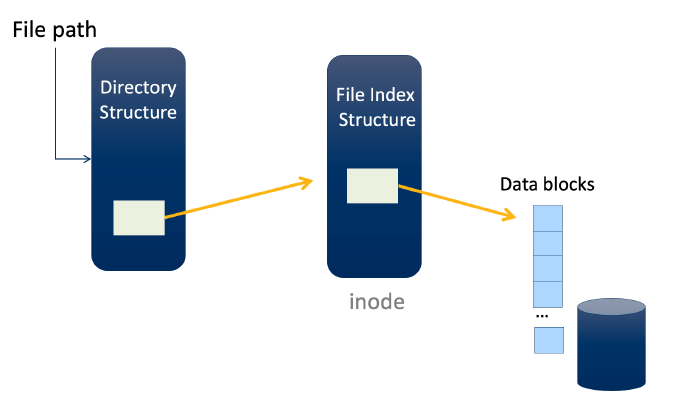
文件系统布局(File System Layout) ?????
Computers can have multiple storage devices (disks). Disk能被划分成不同的部分(partition, if containing file system: volume)，每个部分都可以用不同的文件系统（或者干脆不用）。Each volume containing a file system also tracks that file system’s information in device directory or volume table of contents.
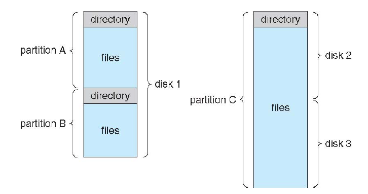
File system needs to maintain on-disk (for data storage) and in-memory (for data access) structures.
On-disk structure has several control blocks.
Master Boot Record (MBR): information to boot the computer (per disk)
Partition Table: the starting and ending addresses of each partition (one is marked as active)
Boot Block: information needed to boot OS (per partition). Typically, the first block of partition (empty if no OS).
Partition Control Block: information about partition. Block size, # blocks, free block list, …
File Control Block: details regarding a file. Permission, size, locations of data blocks, …
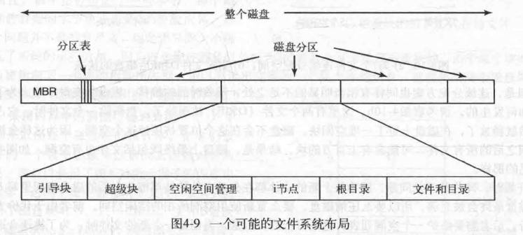
Disks are divided into blocks of fixed size (typically 4 KB). Most blocks are data blocks (form the data region).
Other blocks store metadata
An array of inode: each contains information for a file
- While data blocks belong to the file, file size, owner, access rights, …
- One block can contain multiple inodes
- For 256 bytes inode, 16 per block; with 5 blocks for inodes, file system can have up to 80 files
Free space tracking (bitmap, linked list)
- Determine whether a data block or an inode is free
- One structure for inode, one for data
Superblock: information about the file system
- File system type, number of blocks, number of inodes, beginning of the inode table, …
- First block read when mounting a file system
In-memory structures reflects and extends on-disk structures
- Mount table storing file system mounts (mount points, file system type)
- System-wide open-file table
- Per-process open-file table
- Directory structure: holds the directory information about recently accessed directories
- I/O memory buffers: holds file-system blocks while they are being read from or written to disk
文件储存的实现(Allocation Method)
文件存储实现的关键问题是记录各个文件分别用到哪些磁盘块。
连续分配(Contiguous)
每个文件作为一连串连续数据块存储在磁盘上。For 1KB disk block, allocate 20 consecutive blocks for a 20KB file.
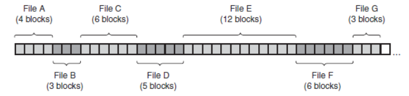
优势：实现简单，记录每个文件用到的磁盘块简化为只需记住两个数字：the disk address of the first block and the number of blocks. 对于random address计算data location速度块。
不足：不灵活（创建时有必要知道该文件的最终大小；会导致External fragmentation）But good for CD-ROM and DVD.
Some file systems use extent-based contiguous allocation. Extent is a set of contiguous blocks. A file consists of extents, extents are not necessarily adjacent to each other.
链表分配(Linked List Allocation)
为每个文件构造磁盘块链表。每个块的第一个字作为指向下一块的指针，块的其他部分存放数据。
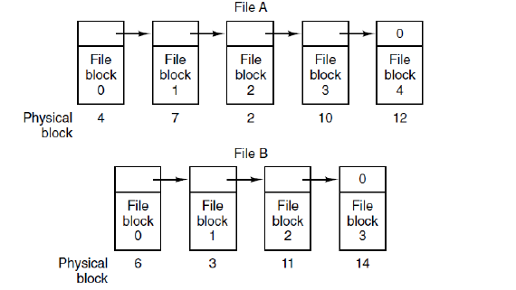
优势：每个disk block都会被使用；没有外部碎片；在目录项中只需要存放第一块的磁盘地址，文件的其他块就可以从这个首块地址找到。
不足：随机访问缓慢, can take many disk I/Os；需要额外的空间来存放指针；可靠性不足 when the pointer has corrupted.
Improvement: cluster the blocks, like 4 blocks.（然而这会导致internal fragmentation）
文件分配表(File Allocation Table, FAT)
An variation of linked allocation. 为了解决链表分配的不足，取出每个disk block的指针字，把它们放到内存的一个表之中。
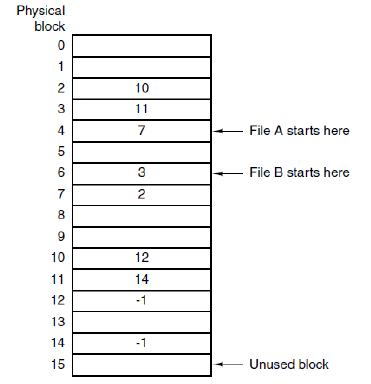
按这种方式，整个block都可以存放数据。Random access也更容易（虽然仍要顺着链在文件中查找给定的偏移量，但整个链都在内存中，所以不需要任何磁盘引用）。同样，在目录项中只需要存放第一块的起始块号就能找到全部块。
FAT-16: $2^{16}$ entries, maximum disk partition size with 4KB blocks = 256MB
不足：必须把整个表都存放在内存中。For 1TB ($2^{40}$) disk and 4KB ($2^{12}$) block, more than 260+ million ($2^{28}$) entries are needed. If 4 bytes per entry, 1GB for FAT table.
Indexed (inode的多级索引设计)
Each file has an array of pointers to block (index block). 索引块的第i个条目指向文件的第i个块。目录条目包括索引块的地址。要读第i块，通过索引块的第i个条目的指针来查找和读入所需的块。
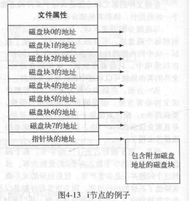
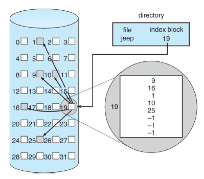
Size of index block不能太大（浪费空间）也不能太小（没有足够的指针）
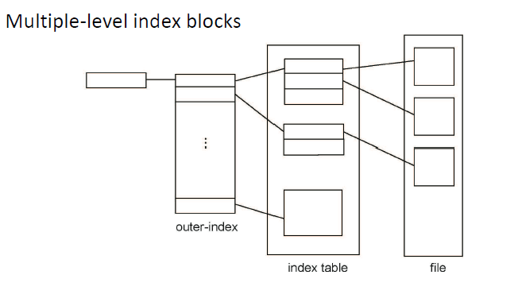
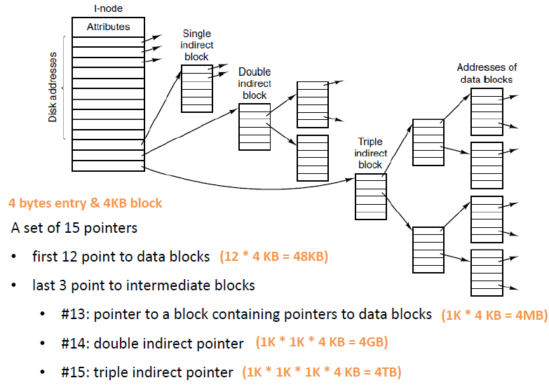
Summary
Best allocation method depends on file access type
- Contiguous is great for sequential and random
- Linked is good for sequential, but not for random
- Indexed allocation is more complex
- Index block can be directly accessed if in memory
- If not, requires multiple index block reads
目录的实现(Directory Implementation)
目录项中包含的信息、不同长度文件名的处理
The file attributes can be stored directly in the directory entry (with fixed-size entry size), or each directory entry just refers to an inode (only filename + inode number)
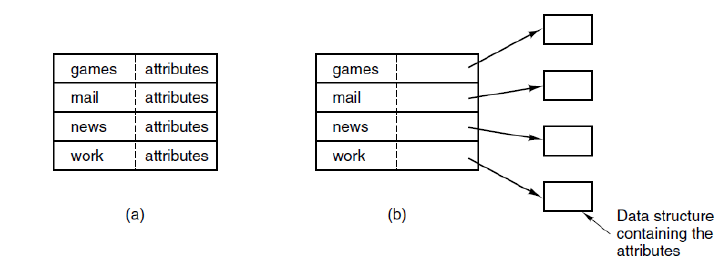
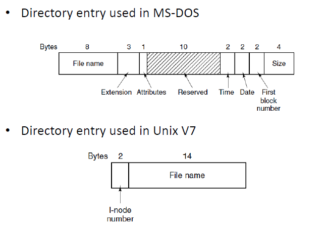
How about long, and variable-length filenames?
最简单的方法是给予文件名一个长度限制，典型值为255个字符。这种处理简单，但是浪费大量的目录空间，因为只有很少的文件会有这么长的名字。
或者，让每个目录项有不同的长度。每个目录项有一个固定部分，这个固定部分通常以entry length开始，后面是attributes. 固定部分之后是Filename（以一个特殊字符结束）。缺陷是移走文件后会引入一个长度可变的gap.
或者，让每个目录项有固定的长度。Keep all filenames together in a heap. When an entry is removed, the next file entered will always fit. 文件名不需要从字的边界开始。Must manage the heap.
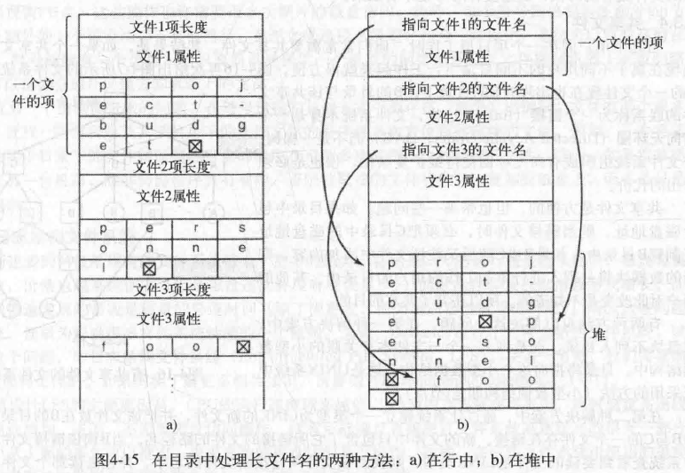
在目录中查找文件
方法有：
- 线性地从头到尾对目录进行搜索。对于非常长的目录，线性查找就太慢了。
- 在每个目录中使用哈希表。用链表来处理collisions. 优点是快速，但需要复杂的管理。
- Store <filename, inode number> using a tree like B tree.
- Nevertheless, the results of search can be cached.
磁盘空闲空间管理(Disk Space Management)
不同数据块大小对文件系统的影响
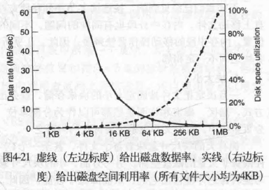
Data rate goes up almost linearly with block size. More spaces are wasted for larger blocks.
Historically, file systems have chosen sizes in the 1~4 KB range. With disks now exceeding 1 TB, it might be better to increase the block size to 64KB.
记录空闲块：Bit Map、Free List
Bit Map
Use one bit for each block, track its allocation status. Relatively easy to find contiguous blocks. Hardware support bit manipulation operations.
Bit map requires extra space.
- Block size = 4 KB = $2^{12}$ bytes
- Disk size = 1TB = $2^{40}$ bytes
- $2^{40} / 2^{12} = 2^{28}$ bits = 256 MB
- If clusters of 4 blocks, then 64MB
Free List
No waste of space, just use the memory in free blocks for pointers. Only one block of pointers need to be kept in main memory. Keep the address of starting block + the number of contiguous free blocks (Counting). 链表的每个块中包含尽可能多的空闲磁盘块号(Grouping). 对于1KB大小的块和32位的磁盘块号（2^10/2^2 = 2^8），空闲表中每个块包含有255个空闲块的块号（需要有一个位置存放指向下一个块的指针）。Allocating multiple free blocks does not need to traverse the list.
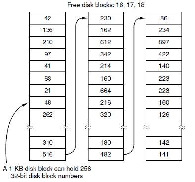
在某些特定情形下，这个方法产生了不必要的磁盘I/O 。考虑图4-23a中的情形，内存中的指针块只有两个表项了。如果释放了一个有三个磁盘块的文件，该指针块就溢出了，必须将其写入磁盘，这就产生了图4-23b的情形。如果现在写入含有三个块的文件，满的指针块不得不再次读入，这将回到图4-23a的情形。如果有三个块的文件只是作为临时文件被写人，当它被释放时，就需要另一个磁盘写操作，以便把满的指针块写回磁盘。总之，当指针块几乎为空时，一系列短期的临时文件就会引起大最的磁盘I/O。
一个可以避免过多磁盘I/O的替代策略是，拆分满了的指针块。这样，当释放三个块时，不再是从图4-23a变化到图4-23b, 而是从图4-23a变化到图4-23c 。现在，系统可以处理一系列临时文件，而不需进行任何磁盘I/O。如果内存中指针块满了，就写入磁盘，半满的指针块从磁盘中读入。这里的思想是：保持磁盘上的大多数指针块为满的状态（减少磁盘的使用），但是在内存中保留一个半满的指针块。这样，它可以既处理文件的创建又同时处理文件的删除操作，而不会为空闲表进行磁盘I/O.
文件系统的性能
访问磁盘(I/O operations)比访问内存慢得多，因此需要采取各种优化措施以改善性能。
缓存(Cache)
Keep frequently used blocks in memory.
因为Cache中有许多块，通常有上千块。所以Use a hash table to track if a given block is present (and maintain a LRU list)
当cache满了的时候，需要调入新的block，要把原来的某一块移出cache. 这种情况类似于分页(FIFO, second chance, LRU, etc.) 与分页相比，cache的好处在于对cache的引用不很频繁，所以按精确的LRU顺序在链表中记录全部的块是可行的。
现在存在一种情形，使我们有可能获得精确的LRU, 但是碰巧该LRU却又不符合要求。这个问题与前一节讨论的系统崩溃和文件一致性有关。如果一个关键块（比如i节点块）读进了高速缓存并做过修改，但是没有写回磁盘，这时，系统崩溃会导致文件系统的不一致。如果把i节点块放在LRU链的尾部，在它到达链首并写回磁盘前，有可能需要相当长的一段时间。此外， 某一些块，如i节点块，极少可能在短时间内被引用两次。基于这些考虑需要修改LRU方案，并应注意如下两点：
- Is the block likely to be needed again soon? 最近可能不再需要的块(inode)在前部，最近可能再次使用的块（比如正在写入的部分满数据块）可放在链表尾部，能保存更长时间。
- Is the block essential to the consistency of the file system? Modification of critical blocks should be written to disk immediately. Data blocks should not be in the cache too long before writing back.
Write-back cache
When modifying a block, mark it as dirty & write to disk later
- On an explicit flush
- When a block is evicted (buffer cache is full)
- When a file is closed
- When a time interval elapses (a program named update will issue a sync call every 30s in Unix)
Higher performance at the cost of potential inconsistencies
- Short-lived files might never make it to disk
- On crash, all modified data in cache is lost
Write-though cache
- Whenever modify cache block, write block to disk
- Cache is consistent, but poor performance
Read-Ahead Prefetching
Try to get blocks into the cache before they are needed to increase the hit rate.
- Many files are read sequentially
- Do not help if a file is being randomly accessed. Might even read in useless blocks and remove potentially useful blocks from the cache.
- File system can track the access patterns to each open file.
快速文件系统(Fast File System, FFS)
Achieving data locality in FFS: Store related data together
- Maintain locality of each file: Allocate data blocks within a group
- Maintain locality of inodes in a directory: Allocate inodes in same directory in a group
- Make room for locality within a directory: Spread out directories to groups and Switch to a different group for large files
文件系统的一致性
很多文件系统读取磁盘块，进行修改后，再写回磁盘。如果在修改过的磁盘块全部写回之前系统崩溃，则文件系统有可能处于不一致状态。
★ 文件系统一致性检查(File System Consistency Check, fsck)
Let inconsistency happen and fix them post facto (during reboot).
Sanity check the superblock
- Is file system size larger than total blocks that have been allocated?
- Is file system size “reasonable”?
- On inconsistencies
- Use another copy of the superblock
- Overwrite values in superblock with those found in the file system
Check validity of free block and inode bitmaps
- Scan inodes, indirect blocks … to understand which blocks are allocated
- On inconsistency, override free block bitmap (inodes win)
- Perform similar check on inodes to update inode bitmap
Check that inodes are not corrupted
- e.g., check type (directory, regular file, symlink, etc) field
- if issues can’t be fixed, clear inode and update inode bitmap
Check inode hard links
- Scan through the entire directory tree, recomputing the number of hard links for each file
- If inconsistency, fix link count in inode
- If no directory refers to allocated inode, move to lost + found directory
Check for duplicated blocks, bad pointers
Two inodes pointing to the same block
- Clear one inode (if bad), or copy block (to each, its own)
Pointer pointing to a node outside partition
Check directories
- Check that . and .. are the first entries
- Check that each inode referred to is allocated
- Check that directory tree is a tree
缺陷：Require intricate knowledge of the file system，扫描磁盘太慢了
日志文件系统(Virtual File System)
Basic idea是Write-ahead logging. 在真正update之前先把update写到Journal (stored on disk)里。如果failure occurs in the middle of the update, 我们就read the journal on restart, 再尝试一次。（write之前炸了：no operation；write之后炸了：re-do operation）.
Updates are saved in the journal as transactions (journal write)
- Write TxB (transaction begin)
- Put update of inode (I[v2]) in journal
- Put update of bitmap (B[v2]) in journal
- Put update of data block (Db) in journal
- Write TxE (transaction end)
一旦the transaction is safely on disk, 就把update写到their final on-disk locations (checkpoint)
为了提高写的速度，磁盘可能并发的写。Disk may perform scheduling and complete write in any order. 同时写除了TxE的四个，再写TxE，最后写到disk (checkpoint).
To recover from a crash: 如果crash发生在journal commit之前，忽略更新；发生在journal commit之后但checkpoint之前，redo logging；Happens during checkpointing, Some redundant writes.
The log is of a finite size: Treat the log as a circular data structure, reusing it over and over. Once a transaction has been checkpointed, free the space it was occupying within the journal. Journal super block records enough information to know which transactions have not yet been checkpointed.
Data journaling有代价，因为数据要写两次。可以采用Metadata journaling来获得consistency和performance的平衡。
虚拟文件系统(Virtual File System, VFS)
Many different file systems are in use on the same computer and the same operating system. VFS提供了一种object-oriented way来实现文件系统。把文件系统共有的代码封装在独立的区域，Defines a common interface (如open, read, write等POSIX接口) for file system, all file systems need to implement them. 这样能Separates file system operations from implementation details.
设备管理
设备控制器(Controller)
A controller is a collection of electronics that can operate a port, a bus, or a device. 设备控制器通过寄存器与CPU通信，寄存器通常有4个 (Data-in register, Data-out register, Status register, Command register).
设备类型
块设备(block device)
- Stores information in fixed-size blocks
- Transfers are in units of entire blocks
字符设备(character device)
- Delivers or accepts stream of characters, without regard to block structure
- Not addressable, does not have any seek operation
设备驱动程序(Driver)
设备驱动程序是一种内核模块，负责管理硬件设备的底层 I/O操作。设备驱动程序是使用标准接口编写的，内核可通过调用该标准接口与设备进行交互。
What does a device driver do?
- Provide “the rest of the OS” with APIs (init, open, close, read, write…)
- 与设备控制器交互。Commands and data transfers with hardware controllers.
- Driver operations
- Initialize devices
- Accept and process interrupts
- Maintain the integrity of driver and kernel data structures
进程访问寄存器的两种方式
端口映射I/O (Port-Mapped I/O)
Each control register is assigned an I/O port number which is protected. Using a special I/O instruction the OS can read and write in control register
1 | IN REG, PORT |
内存映射I/O (Memory-Mapped I/O)
把所有的control registers映射到地址空间。当CPU想要read时，就将需要的地址给总线，如果正好在I/O地址范围，对应的设备就会响应请求。
优点
- 如果需要特殊的IO指令读写control registers，那么访问这些寄存器要使用汇编，调用这样的过程增加了开销(C和C++本身并不提供这样的方法)，而内存映射不存在这样的问题
- 不需要特殊的保护机制，操作系统只需要维护控制寄存器不要被放到用户的虚拟地址空间就可
- 任何指令只要能访问内存，其就能访问control registers.
缺点
- 用内存映射将造成设备寄存器被cache掉，而对于设备这种实时更新状态的方式是灾难性的，可能会造成死循环
- 所以硬件需要提供机制来禁止cache，操作系统也需要提供机制来管理cache，这无疑增加了二者的复杂性
直接存储器读取(Direct Memory Access, DMA)
DMA的工作过程是：CPU读写数据时，他给IO控制器发出一条命令，启动DMA控制器，然后继续其他工作。之后CPU就把这个操作委托给DMA控制器，由该控制器负责处理。DMA控制器直接与存储器交互，传送整个数据块，这个过程不需要CPU参与。当传送完成后，DMA控制器发送一个中断信号给处理器。因此，只有在传送开始和结束时才需要CPU的参与。
DMA约等于一个专门执行”memcpy”程序的CPU. 节省时间和算力。
磁盘
磁盘臂调度算法(Disk Arm Scheduling Algorithms)
Disk latency = seek + rotation + transfer (time)
seek是寻道时间（将磁盘臂移动到适当的柱面上所需的时间）
On average, rotation time是等待适当扇区旋转到磁头下所需的时间，大约是一次旋转时间的一半。
主要是seek和rotation占时间。
FIFO (FCFS) order
优点：公平，符合期待的顺序；缺点：输入随机时时间会很长
Shortest Seek First (SSF, SSTF)
下一次总是处理与磁头最近的请求以使寻道时间最小化。优点：Try to minimize seek；缺点：饿。
非最优。SSF是贪心算法，而最短路径是NPC问题。
Elevator (SCAN)
类比三次元电梯，启动时找最近的。不轻易改变方向，除非该方向上没有其他请求(LOOK)；或者撞到边际再回头(SCAN).
优点：每次请求的时间有上界（柱面数的两倍）；缺点：Request at the other end will take a while.
廉价磁盘冗余阵列(Redundant Array of Inexpensive Disks, RAID)
RAID is a system that spreads data redundantly across multiple disks in order to tolerate individual disk failures.
- RAID 0: no replication
- RAID 1: mirror data across two or more disks
- RAID 4, 5: split data across disks, with redundancy to recover from a single disk failure
- RAID 6: RAID 5, with extra redundancy to recover form two disk failures
这里P是Parity奇偶校验。Parity block: block1 $\oplus$ block2 $\oplus$ block3 … 若某个Block寄了，能通过奇偶校验位恢复。P’是另一套检验方式，不需要掌握。
更新数据：Mirroring只要write every mirror. RAID4和5更新new data和parity
$$
\text{New_Parity} = \text{Old_parity} \oplus \text{Old_data}_i \oplus \text{New_data}_i
$$